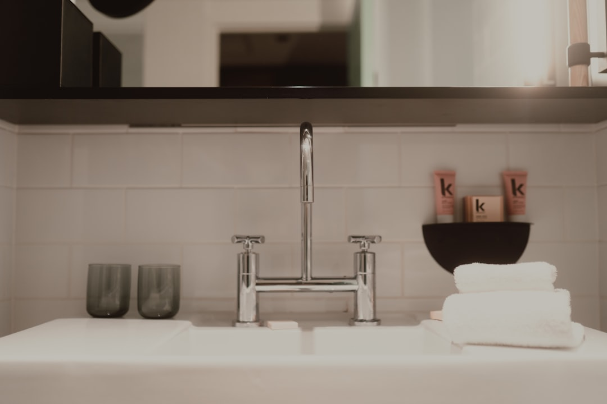

The practical move on this Gold Coast bathroom guide is to get the room's problems, location and desired changes into a clear brief before quoting starts. The page says written, itemised quotes come first, a Domestic Building Contract applies once work passes $3,300, and wet areas are waterproofed to AS 3740 by licensed waterproofers with aspect certification on completion. Building stock also varies sharply across the coast, from Broadwater high-rise apartments to older brick and fibro homes, which changes what the brief needs to cover.
A bathroom renovation Gold Coast homeowner is planning usually starts with the room's faults, not the finish, and the practical value is getting those faults, the access details and the building type into the brief before a quote is drawn up. See Bath Renovation Gold Coast for the current service details.
Bathroom Renovation Gold Coast Explained
Bath Renovation Gold Coast asks for the room's problems, the suburb and the wanted changes before anyone quotes. On the coast, that brief has to flex with the building itself. The page's own suburb notes describe Southport's mid-century brick walk-ups and Broadwater apartments, Surfers Paradise's high-rise towers and holiday-let apartments, Nerang's established 1970s-80s brick homes, and Labrador's post-war fibro homes, alongside newer project-home suburbs such as Helensvale and Robina.
Those building types raise different questions before quoting. A high-rise or holiday-let apartment usually means lift bookings, body corporate approval and staged access. An older brick or fibro home raises questions about wall and floor build-up behind the tiles. A newer project home is more likely to be a straightforward strip-out. None of that shows up in a generic brief, only in one that names the actual building.
- State whether the property is a strata apartment, an older home or a project home
- Note any body corporate, lift or access booking that applies to the building
- Flag if the bathroom is a holiday-let, since turnaround and access windows differ
What the service menu actually covers
The page groups the work into six lines: full bathroom renovations, small bathroom renovations, ensuite renovations, shower replacements and upgrades, bathroom waterproofing, and bathroom tiling. Each implies a different level of strip-out and finish selection, from a full rebuild through to a waterproofing and tiling job on its own.
Waterproofing is called out specifically: wet-area work is carried out to Australian Standard AS 3740 by licensed waterproofers, with aspect certification issued on completion. That certification is the practical proof the membrane work was done and signed off, worth asking for regardless of which service line the job falls under.
The page's own examples span a tired family bathroom in Nerang, a holiday-let ensuite in Surfers Paradise and a leaking shower in Labrador, three different jobs sitting under the same service menu.
How the quote and contract step works
The process runs enquiry, then clarifying the job, then a written quote, then the renovation. The quote is meant to be clear and itemised, with price and terms set out before work begins, and a written Domestic Building Contract applies once the job passes $3,300.
Early cost figures are planning ranges only. The written quote follows the site review, once the renovator has seen the room, the access and the building type behind it. For a strata apartment, that review is also the point to confirm who is responsible for booking the lift and lodging body corporate paperwork.
Local conditions worth naming upfront
Coverage runs from Southport to Coolangatta and the hinterland edge, across 15 suburbs and beyond. Rather than treating that spread as a single market, the page's own suburb descriptions separate beachside high-rise and holiday-let stock, established brick and fibro homes, and newer project-home estates such as Helensvale and Varsity Lakes.
That split matters for a bathroom job specifically because access and existing wall or floor construction drive both the waterproofing detail and the timeline, more than the suburb name on its own. A hinterland-edge home in Nerang or Mudgeeraba, for instance, sits on a larger block with different access than a Broadwater-facing tower in Southport or Surfers Paradise.
Who this guide helps most
This guide is most useful if the current bathroom has a leak, a cramped layout, a dated finish, or sits inside a building type, apartment, older home or holiday-let, that changes how the job gets scoped and accessed. It is also a better fit for comparing quotes on the same basis rather than reacting to the first number that lands in your inbox.
People likely to get value are apartment owners weighing body corporate steps, owners of an older brick or fibro home wanting the waterproofing done properly, and holiday-let operators needing the work staged around bookings.
- Send the enquiry. Share the suburb, building type and the room's main problem.
- Clarify the job. Work through access, body corporate or holiday-let scheduling, and what must stay or go.
- Review the written quote. Check that scope, price, terms and the AS 3740 waterproofing detail are itemised.
- Schedule the renovation. Once the quote is accepted, the contractor coordinates the trades through to handover.
| Project type | What it usually needs | What to clarify first |
|---|---|---|
| Full bathroom renovation | Strip-out, layout decisions, waterproofing, tiling and fit-off | Building type, and whether plumbing or electrical changes are involved |
| Small bathroom renovation | Compact layout, storage, shower access and a cleaner finish | What can stay, what must change and what is non-negotiable |
| Ensuite renovation | Space-efficient update around main-bedroom use | Whether the main aim is storage, comfort or a calmer layout |
| Shower replacement and upgrade | Membrane, drainage and screen details before fresh tiles go in | Whether leaks, screen style or drainage are the main issue |
| Waterproofing and tiling only | Wet-area protection to AS 3740 beneath the finish | Whether the room needs one trade or a full coordinated project |
Common questions
What should I have ready before asking for a quote? Have the suburb, the building type, apartment, older home or holiday-let, and the room's main problem ready. If lift booking or body corporate approval applies, mention that too.
Why does the building type matter on a Gold Coast bathroom job? The page's suburb notes describe everything from high-rise and holiday-let apartments to older brick and fibro homes and newer project homes. Access, approval steps and existing construction all differ between them.
What does AS 3740 waterproofing actually involve? The page states wet-area waterproofing is carried out by licensed waterproofers to Australian Standard AS 3740, with aspect certification issued once the work is complete.
What needs to be in writing before work starts? The quote should be clear and itemised, with scope, price and terms set out before any work begins. A written Domestic Building Contract applies once work passes $3,300.
Which parts of the job does this guide cover? Full bathroom renovations, small bathroom renovations, ensuite renovations, shower replacements and upgrades, bathroom waterproofing, and bathroom tiling.
This guide covers bathroom project planning, service stages, quote structure, building-type differences and wet-area compliance across the Gold Coast.